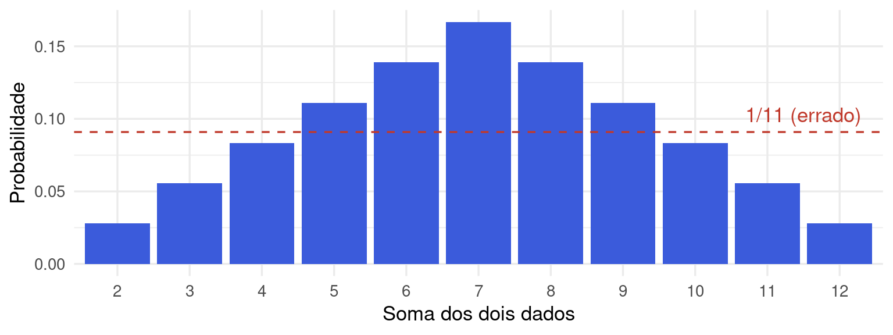
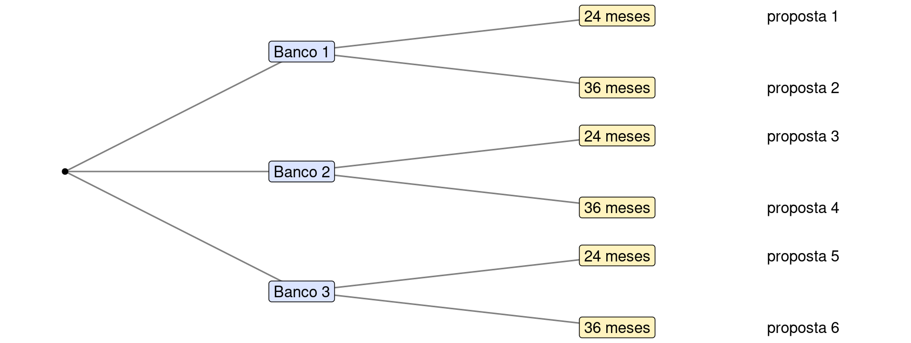
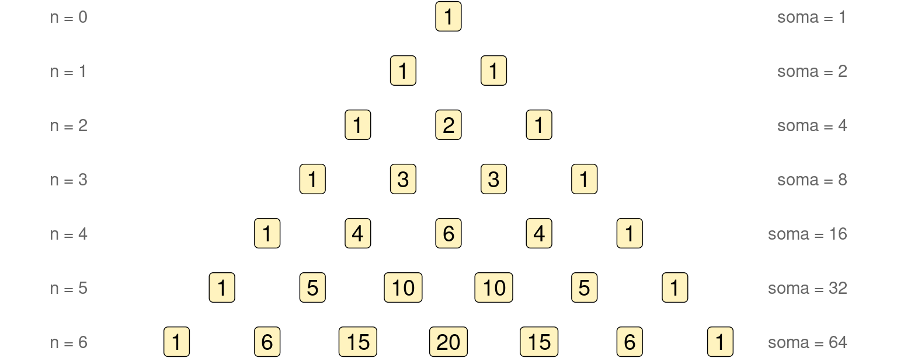
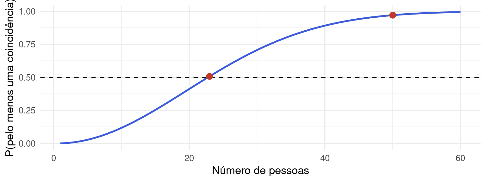

2.4 Técnicas de contagem e probabilidade clássica
Para usar \(P(A) = \#A / \#\Omega\) precisamos contar quantos elementos têm o evento e o espaço amostral. Listar todos os casos costuma ser inviável: só as apostas simples possíveis da Mega-Sena passam de 50 milhões. Esta seção explica o que cada técnica conta, por que a fórmula funciona e quando a contagem vira probabilidade.
2.4.1 Quando contar resolve, e quando não resolve
Contar casos só produz probabilidades quando os casos são igualmente prováveis. O erro mais comum é descrever o espaço amostral por resultados que não têm a mesma chance.
- Soma de dois dados. A soma vai de 2 a 12, são 11 valores, mas \(P(\text{soma} = 7) \neq 1/11\). Os resultados igualmente prováveis são os 36 pares ordenados \((i, j)\); a soma 7 aparece em 6 deles, logo \(P(\text{soma} = 7) = 6/36 = 1/6\), enquanto a soma 2 só aparece em \((1, 1)\): \(1/36\).
- O erro de d’Alembert. No século XVIII, o matemático d’Alembert argumentou que, em dois lançamentos de moeda, “nenhuma cara”, “uma cara” e “duas caras” teriam chance \(1/3\) cada. Mas os resultados elementares são \(KK, KC, CK, CC\), e “uma cara” corresponde a dois deles: \(P = 2/4 = 1/2\).
dados36 <- expand.grid(d1 = 1:6, d2 = 1:6) # os 36 pares ordenados
table(dados36$d1 + dados36$d2) # quantos pares dão cada soma##
## 2 3 4 5 6 7 8 9 10 11 12
## 1 2 3 4 5 6 5 4 3 2 1
Figura 2.7: Distribuição da soma de dois dados: 11 somas possíveis, mas não igualmente prováveis. Os resultados equiprováveis são os 36 pares ordenados.
Regra de ouro. Antes de contar, descreva \(\Omega\) por resultados elementares que sejam igualmente prováveis por simetria (pares ordenados, sequências, subconjuntos sorteados ao acaso). Só então \(P(A) = \#A / \#\Omega\) vale. Se não houver simetria, conte o que quiser, mas não divida.
2.4.2 Princípios aditivo e multiplicativo
Princípio aditivo. Se uma escolha pode ser feita de \(m\) maneiras de um tipo ou de \(n\) maneiras de outro tipo, sem sobreposição, há \(m + n\) maneiras. Um investidor que escolhe um fundo entre 8 de renda fixa ou 5 de ações tem \(8 + 5 = 13\) opções.
Princípio multiplicativo. Se uma tarefa é feita em \(k\) etapas sucessivas, com \(n_1\) maneiras para a primeira, \(n_2\) para a segunda (qualquer que tenha sido a primeira), e assim por diante, a tarefa tem \(n_1 \times n_2 \times \cdots \times n_k\) maneiras. O diagrama de árvore mostra por quê: cada ramo da primeira etapa se abre no mesmo número de ramos na etapa seguinte.

Figura 2.8: Princípio multiplicativo: 3 bancos × 2 prazos = 6 propostas de financiamento. Com 2 tipos de taxa (pré ou pós-fixada), seriam 3 × 2 × 2 = 12.
Exemplos.
- Placas de veículos no padrão Mercosul (LLL NLNN: três letras, um número, uma letra, dois números): \(26^3 \times 10 \times 26 \times 10^2 = 26^4 \times 10^3 = 456.976.000\) placas.
- Senha bancária de 6 dígitos: \(10^6 = 1.000.000\) senhas; um palpite ao acaso acerta com probabilidade \(1/1.000.000\).
- Trajetórias da Selic: com 3 decisões possíveis em cada uma das 8 reuniões anuais do Copom, há \(3^8 = 6.561\) sequências de decisões.
- Número de eventos de um espaço finito com \(n\) resultados: para formar um evento, decidimos, para cada resultado, se ele entra ou não (2 opções, \(n\) vezes): \(2^n\) eventos.
Cuidado. O princípio multiplicativo exige que o número de opções em cada etapa não dependa das escolhas anteriores (as opções podem mudar, a quantidade não). Quantos números de 3 algarismos distintos existem? Na primeira posição não pode haver zero (9 opções); na segunda, qualquer algarismo menos o já usado (9 opções, agora incluindo o zero); na terceira, 8. Total: \(9 \times 9 \times 8 = 648\).
2.4.3 Os quatro tipos de seleção
Quase todo problema de contagem é uma variação de “selecionar \(r\) objetos entre \(n\)”. Duas perguntas decidem a fórmula: a ordem importa? e pode repetir?
| Com repetição | Sem repetição | |
|---|---|---|
| Ordem importa | sequências: \(n^r\) | arranjos: \(A_{n,r} = \dfrac{n!}{(n-r)!}\) |
| Ordem não importa | combinações com repetição: \(\dbinom{n+r-1}{r}\) | combinações: \(\dbinom{n}{r} = \dfrac{n!}{r!\,(n-r)!}\) |
| Situação | Ordem importa? | Repete? | Conta |
|---|---|---|---|
| Senha de 4 dígitos | sim | sim | \(10^4 = 10.000\) |
| Presidente, vice e tesoureiro entre 10 conselheiros | sim | não | \(10 \times 9 \times 8 = 720\) |
| Carteira de 4 ações entre 12 aprovadas | não | não | \(\binom{12}{4} = 495\) |
| Distribuir 10 parcelas iguais de orçamento entre 3 programas | não | sim | \(\binom{12}{2} = 66\) |
2.4.4 Permutações
Uma permutação é uma ordenação de \(n\) objetos distintos. Há \(n\) escolhas para a primeira posição, \(n - 1\) para a segunda, e assim por diante, até 1 para a última:
\[ n! = n \times (n-1) \times \cdots \times 2 \times 1, \qquad 0! = 1. \]
A convenção \(0! = 1\) (“há uma única forma de ordenar nada”) mantém as fórmulas abaixo válidas nos casos extremos. O fatorial cresce muito rápido: \(5! = 120\), \(10! = 3.628.800\) e \(20! \approx 2{,}4 \times 10^{18}\), por isso listar casos é inviável.
Exemplos.
- Um comitê ordena 5 projetos de investimento por prioridade: \(5! = 120\) rankings possíveis. Se o ranking for feito ao acaso, a probabilidade de o melhor projeto (segundo um critério técnico) ficar em primeiro é \(4!/5! = 1/5\): fixado o primeiro lugar, sobram \(4!\) ordenações.
- Uma turma com 6 homens e 4 mulheres é classificada por nota: \(10! = 3.628.800\) classificações; se homens e mulheres forem classificados separadamente, \(6! \cdot 4! = 17.280\).
Permutações com elementos repetidos. Quando alguns objetos são iguais entre si, trocá-los de lugar não gera ordenação nova. Com \(n\) objetos, dos quais \(n_1\) de um tipo, \(n_2\) de outro, …, \(n_k\) de outro,
\[ \frac{n!}{n_1!\, n_2! \cdots n_k!}. \]
Dividimos por \(n_1!\) porque cada ordenação “distinguível” aparece \(n_1!\) vezes entre as \(n!\) ordenações em que os objetos iguais são tratados como diferentes (e o mesmo para os demais tipos).
- Trajetórias mensais: em 12 meses, o preço de um ativo subiu em 7 e caiu em 5. Quantas sequências de altas (A) e quedas (Q) são possíveis? \(12!/(7!\,5!) = 792\).
- Anagramas de ECONOMIA (8 letras, com o O repetido): \(8!/2! = 20.160\).
2.4.5 Arranjos
Um arranjo de \(r\) objetos entre \(n\) é uma sequência sem repetição: a ordem importa porque as posições são diferentes (cargos, colocações, etapas). Pelo princípio multiplicativo,
\[ A_{n,r} = n(n-1)\cdots(n-r+1) = \frac{n!}{(n-r)!}. \]
- Presidente, vice e tesoureiro escolhidos entre 10 conselheiros: \(A_{10,3} = 720\).
- Os três primeiros colocados em uma licitação com 8 empresas: \(A_{8,3} = 336\).
- Códigos de 3 dígitos com \(\{1, 2, 3, 4, 5\}\) sem repetição: \(5 \times 4 \times 3 = 60\). A probabilidade de um código sorteado começar com 1 é \(A_{4,2}/60 = 12/60 = 1/5\).
2.4.6 Combinações
Uma combinação de \(r\) objetos entre \(n\) é um subconjunto (grupo) de \(r\) elementos: a ordem não importa. A fórmula vem dos arranjos: cada grupo de \(r\) elementos pode ser ordenado de \(r!\) maneiras, então cada grupo aparece \(r!\) vezes na lista de arranjos. Logo
\[ \binom{n}{r} = \frac{A_{n,r}}{r!} = \frac{n!}{r!\,(n-r)!}. \]
Vendo a divisão por \(r!\). Um fundo escolhe 2 de 4 empresas, \(\{A, B, C, D\}\). Há \(A_{4,2} = 12\) pares ordenados, mas cada carteira aparece duas vezes (\(AB\) e \(BA\) são a mesma carteira): \(12/2! = 6\) carteiras.
empresas4 <- c("A", "B", "C", "D")
pares_ord <- subset(expand.grid(prim = empresas4, seg = empresas4), prim != seg)
nrow(pares_ord) # 12 arranjos## [1] 12## [1] "AB" "AC" "AD" "BC" "BD" "CD"Propriedades, com leitura combinatória.
- Simetria: \(\binom{n}{r} = \binom{n}{n-r}\). Escolher os \(r\) que entram equivale a escolher os \(n - r\) que ficam de fora.
- Relação de Pascal: \(\binom{n}{r} = \binom{n-1}{r-1} + \binom{n-1}{r}\). Fixe uma empresa específica: os grupos que a contêm escolhem os outros \(r - 1\) entre \(n - 1\); os que não a contêm escolhem os \(r\) entre \(n - 1\).
- Soma: \(\sum_{r=0}^{n} \binom{n}{r} = 2^n\). Contar todos os subconjuntos por tamanho dá o mesmo que contar “entra ou não entra” para cada elemento.
- Teorema binomial: \((a + b)^n = \sum_{k=0}^{n} \binom{n}{k} a^k b^{n-k}\). Ao expandir o produto de \(n\) fatores \((a + b)\), o termo \(a^k b^{n-k}\) aparece uma vez para cada escolha de quais \(k\) fatores contribuem com \(a\). Essa identidade é a base da distribuição Binomial (Capítulo 3).

Figura 2.9: Triângulo de Pascal: cada número é a soma dos dois acima dele; a linha n traz os coeficientes binomiais, que somam 2ⁿ.
Combinações com repetição. Distribuir \(r\) unidades idênticas entre \(n\) categorias (ou escolher \(r\) itens entre \(n\) tipos, podendo repetir o tipo) tem \(\binom{n+r-1}{r}\) possibilidades. A ideia (“estrelas e barras”): represente as \(r\) unidades por estrelas e separe as \(n\) categorias com \(n - 1\) barras; cada arrumação de \(r\) estrelas e \(n - 1\) barras em \(n + r - 1\) posições é uma distribuição. Um orçamento de 10 parcelas de R$ 1 milhão distribuído entre 3 programas (algum pode ficar sem nada) tem \(\binom{12}{10} = \binom{12}{2} = 66\) distribuições possíveis.
2.4.7 Da contagem à probabilidade: exemplos desenvolvidos
Exemplo 1: Mega-Sena. Sorteiam-se 6 números entre 60, e todas as \(\binom{60}{6} = 50.063.860\) combinações são igualmente prováveis. Para uma aposta simples de 6 números:
- Sena (acertar os 6): 1 caso favorável, \(P = 1/50.063.860\).
- Quina (acertar exatamente 5): escolher quais 5 dos 6 apostados foram sorteados, \(\binom{6}{5} = 6\), e qual dos 54 não apostados completa o sorteio, \(\binom{54}{1} = 54\): \(324\) casos, \(P \approx 1/154.518\).
- Quadra (exatamente 4): \(\binom{6}{4}\binom{54}{2} = 15 \times 1.431 = 21.465\) casos, \(P \approx 1/2.332\).
- Uma aposta com 7 números contém \(\binom{7}{6} = 7\) combinações de 6: a chance de sena é 7 vezes maior, \(7/50.063.860\), a mesma de 7 apostas simples diferentes.
total_ms <- choose(60, 6)
casos <- c(sena = 1,
quina = choose(6, 5) * choose(54, 1),
quadra = choose(6, 4) * choose(54, 2))
casos## sena quina quadra
## 1 324 21465## sena quina quadra
## 50063860 154518 2332Exemplo 2: auditoria fiscal (distribuição hipergeométrica). Um lote tem 200 notas fiscais, das quais 12 são irregulares. O auditor sorteia 20 notas, sem reposição. Como todos os \(\binom{200}{20}\) subconjuntos de 20 notas são igualmente prováveis, a probabilidade de nenhuma nota irregular na amostra é
\[ P(\text{nenhuma}) = \frac{\binom{12}{0}\binom{188}{20}}{\binom{200}{20}} \approx 0,272, \]
e a de encontrar pelo menos uma é \(1 - 0{,}272 = 0{,}728\). Em geral, com \(N\) itens, \(K\) “marcados” e amostra de \(n\), a probabilidade de exatamente \(k\) marcados é \(\binom{K}{k}\binom{N-K}{n-k} / \binom{N}{n}\). Pela mesma lógica, se uma remessa de 150 celulares tem 40 defeituosos e 20 são escolhidos ao acaso, \(P(\text{exatamente 9 defeituosos}) = \binom{40}{9}\binom{110}{11}/\binom{150}{20} \approx 0{,}0321\).
Leitura econômica. Uma auditoria com 20 notas deixa passar um lote com 6% de irregularidades em mais de um quarto das vezes. Aumentar a amostra reduz esse risco, mas custa mais horas de auditor: a contagem permite calcular o tamanho de amostra que equilibra custo e risco de não detecção.
Exemplo 3: com ou sem ordem, o resultado tem de ser o mesmo. Um lote tem 10 peças, 4 defeituosas; retiram-se 3 sem reposição. Probabilidade de exatamente 2 defeituosas:
- Sem ordem (subconjuntos): \(\dfrac{\binom{4}{2}\binom{6}{1}}{\binom{10}{3}} = \dfrac{6 \times 6}{120} = 0{,}30\).
- Com ordem (sequências): há \(A_{10,3} = 720\) sequências; a peça boa pode estar em 3 posições, e em cada caso há \(4 \times 3 \times 6 = 72\) sequências: \(\dfrac{3 \times 72}{720} = 0{,}30\).
O importante é usar o mesmo critério no numerador e no denominador.
Exemplo 4: o problema do aniversário. Em um grupo de \(k\) pessoas (ignorando anos bissextos e supondo os 365 dias igualmente prováveis), qual a probabilidade de pelo menos duas fazerem aniversário no mesmo dia? As sequências de aniversários são \(365^k\) (ordem importa, com repetição); as sequências sem coincidência são \(A_{365,k}\) (sem repetição). Pelo complementar,
\[ P(\text{alguma coincidência}) = 1 - \frac{365 \times 364 \times \cdots \times (365 - k + 1)}{365^k}. \]
## [1] 0.5072972 0.9703736
Figura 2.10: Problema do aniversário: com 23 pessoas a chance de coincidência já passa de 50%; com 50, chega a 97%.
A intuição falha porque o número de pares de pessoas cresce rápido: com 23 pessoas há \(\binom{23}{2} = 253\) pares, cada um com chance \(1/365\) de coincidir.
Exemplo 5: a composição de uma diretoria foi obra do acaso? Uma empresa tem 20 executivos elegíveis, 12 homens e 8 mulheres, e forma uma diretoria de 5 pessoas. Se a escolha fosse ao acaso, a probabilidade de nenhuma mulher seria
\[ \frac{\binom{12}{5}\binom{8}{0}}{\binom{20}{5}} = \frac{792}{15.504} \approx 0{,}051. \]
Discussão. A empresa renova a diretoria a cada ano e, em três renovações seguidas (tratadas como independentes), só nomeou homens. Sob a hipótese de escolha ao acaso, isso teria probabilidade \(0{,}051^3 \approx 0{,}00013\). Esse cálculo prova discriminação? O que ele mostra é que a hipótese “ao acaso” explica mal os dados; outras explicações (critérios de promoção, trajetórias de carreira, rede de contatos) precisam ser investigadas. É exatamente o raciocínio dos testes de hipóteses, e aparece em processos judiciais sobre discriminação no mercado de trabalho.
Uso do R. factorial(n) calcula \(n!\); choose(n, r) calcula \(\binom{n}{r}\); prod((n - r + 1):n) calcula
\(A_{n,r}\); combn(x, r) lista as combinações; expand.grid() lista sequências (com repetição). Para conferir
uma conta por simulação, sorteie com sample() muitas vezes e compare a frequência relativa com a fórmula.
c(placas = 26^4 * 10^3, copom = 3^8,
conselho = factorial(10) / factorial(7), carteiras = choose(12, 4),
orcamento = choose(12, 2), trajetorias = choose(12, 7))## placas copom conselho carteiras orcamento trajetorias
## 456976000 6561 720 495 66 792# conferindo a auditoria por simulação: 100 mil amostras de 20 notas
set.seed(1)
notas <- c(rep(1, 12), rep(0, 188))
mean(replicate(1e5, sum(sample(notas, 20)) == 0))## [1] 0.27135Discussão. Um analista estima a chance de “alta do dólar” ou “alta de juros” no trimestre como \(0{,}45 + 0{,}30 = 0{,}75\). Se a chance de ambos é 0,15, qual é o valor correto e qual foi o erro? Um concurso com 200 candidatos para 3 vagas idênticas tem quantos resultados? E se as vagas forem para cargos diferentes? Qual das duas contas corresponde a “ordem importa”?
Exercício 6. a) De quantas formas um banco pode escolher 3 de suas 15 agências para um projeto-piloto? b) E se as 3 agências receberem versões diferentes do projeto (A, B e C)? c) Se a escolha em (a) for ao acaso e 5 das 15 agências ficam no interior, qual a probabilidade de as 3 escolhidas serem do interior?
a) \(\binom{15}{3} = 455\) (grupos). b) \(A_{15,3} = 15 \times 14 \times 13 = 2.730\) (a ordem, isto é, qual agência recebe qual versão, importa); confira que \(2.730 = 455 \times 3!\). c) \(\binom{5}{3}/\binom{15}{3} = 10/455 \approx 0{,}022\).